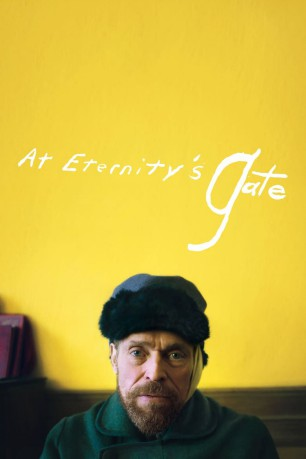

#11159 Van Gogh - An der Schwelle zur Ewigkeit
Alternativ: At Eternity's Gate (Englischer Titel)
Auszeichnungen: für 1 Oscars nominiert
 
 IMDB-Wertung: 6.9 / 10
IMDB-Wertung: 6.9 / 10  Metascore: 76
Metascore: 76 
Vincent van Gogh (Willem Dafoe) leidet unter starken psychischen Problemen und gravierenden emotionalen Schmerzen. Er ist erfolgreicher Maler und Zeichner, doch geplagt von Weltschmerz. In seiner Sinneskrise ist es nicht zuletzt ein Priester (Mads Mikkelsen) der van Gogh fragt: Bist du der geborene Künstler? Während sein Freund Paul Gauguin (Rupert Friend) eine bahnbrechende Kunstrevolution, von van Gogh angeführt, vorsieht, flüchtet der Künstler in die Natur, auf der Suche nach einem Fleck Erde, den die Kunst noch nicht entdeckt hat. Doch seine mentalen Dämonen lassen ihn nicht los und treiben van Gogh in eine psychiatrische Anstalt und schließlich auch dazu, sich das Ohr abzuschneiden und Selbstmord zu begehen.
Jahr: 2018
Dauer: 111 Minuten
FSK: 0
Land: Irland Studio: DCMTonspuren: DTS - ,
Untertitel:
Auflösung: 1080p (1920x808) Größe: 7966 MB
Genre: Drama, Biographie
Regisseur: Julian Schnabel
Drehbuch: Jean-Claude Carrière, Julian Schnabel, Louise Kugelberg
Soundtrack: Tatiana Lisovskaya
Darsteller:
 Willem Dafoe als Vincent van Gogh
Willem Dafoe als Vincent van Gogh Rupert Friend als Theo Van Gogh
Rupert Friend als Theo Van Gogh Oscar Isaac als Paul Gauguin
Oscar Isaac als Paul Gauguin Mads Mikkelsen als Priest
Mads Mikkelsen als Priest Mathieu Amalric als Doctor Paul Gachet
Mathieu Amalric als Doctor Paul Gachet Emmanuelle Seigner als Md Ginoux
Emmanuelle Seigner als Md Ginoux Niels Arestrup als Madman
Niels Arestrup als Madman Anne Consigny als Teacher
Anne Consigny als Teacher Amira Casar als Johanna Van Gogh
Amira Casar als Johanna Van Gogh Vincent Perez als The Director
Vincent Perez als The Director- Lolita Chammah als Girl on the Road
 Vincent Grass als Cafe Owner
Vincent Grass als Cafe Owner- Didier Jarre als Asylum Guard
 Alexis Michalik als Artists Tambourin
Alexis Michalik als Artists Tambourin- François Delaive als Artists Tambourin
 Louis Garrel als Aurier's Article
Louis Garrel als Aurier's Article- Victor Pontecorvo als Farmer's Son (uncredited)
- Stella Schnabel als Gaby
- Vladimir Consigny als Doctor Felix Ray
- Arthur Jacquin als René
- Solal Forte als Gaston
- Clément Paul Lhuaire als Emile Bernard
- Alan Aubert als Albert Aurier / Painter
- Laurent Bateau als Joseph Roulin
- Frank Molinaro als Toulouse Lautrec
- Montassar Alaya als Zouave
- Thierry Nenez als Clerk Hôtel de la Gare
- Johan Kugelberg als Surgeon
- Nicolas Abraham als Artists Tambourin
- Manuel Guillot als Artists Tambourin
- Paul Théotime als School Child
- Romane Libert als School Child
- Milo Aubriet als School Child
- Clélia Robin-Oeustricher als School Child
- Arthur Gloanec als School Child
- Alfred Bloch als School Child
- Ludmilla Roitbourd als School Child
Datei: X:\2018(N-Z)\Van Gogh - An der Schwelle zur Ewigkeit (2018, FSK0, 1920x808).mkv seit 29.04.2019
Festplatte: HD 2018(G-Z)-2019(A-Z)
 Es gibt insgesamt 172 Filme in der Gruppe '2018(N-Z)'
Es gibt insgesamt 172 Filme in der Gruppe '2018(N-Z)'